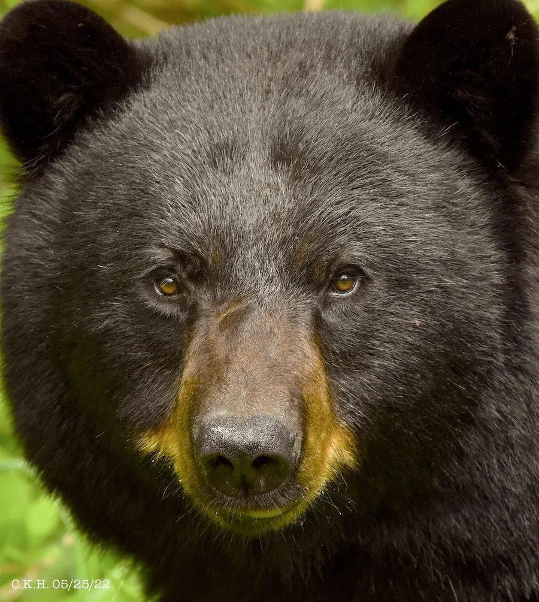

哺乳动物 · 动物界
美洲黑熊 Ursus americanus

北美洲分布最广的熊类，毛色从纯黑到棕黄甚至白色不等，善攀树和游泳，秋季大量进食后进入冬眠，种群总体稳定。
- 分类
- 门脊索动物门纲哺乳纲目食肉目科熊科属熊属
- 栖息环境
- 针叶林、阔叶林、灌丛、沼泽与山地，也进入城郊
- 地理分布
- 北美洲，自阿拉斯加、加拿大至美国大部分地区与墨西哥北部
- 保护级别
- IUCN 无危（LC）
物种志
美洲黑熊体长 120–190 cm，肩高约 90 cm，雄性体重 60–300 kg，雌性通常只有雄性的一半左右。毛色以黑色最常见，也有棕色、肉桂色、蓝灰色和白色的个体；吻部较尖，肩部隆起不如棕熊明显，爪短而弯，善于攀树。
它们分布于阿拉斯加、加拿大至墨西哥北部的森林、灌丛和沼泽，除带仔雌熊外多独居，晨昏和夜间活动。食物很杂，包括浆果、坚果、嫩叶、鱼、昆虫、小型兽类和腐肉，秋季每天可摄入大量热量。冬季在树洞、岩缝或地穴中冬眠，每胎 1–4 仔，妊娠期约 7 个月，幼仔随母亲生活约一年半。种群总体稳定，但人熊冲突和道路致死是主要威胁。
形态与习性
- 食性浆果、坚果、嫩叶、鱼、昆虫、小型兽类与腐肉
- 体长120–190 cm，肩高约 90 cm
- 体重雄性 60–300 kg，雌性约一半
- 寿命野外约 20 年
- 繁殖妊娠期约 7 个月，每胎 1–4 仔
- 活动节律晨昏与夜间活动，冬季冬眠
趣味知识
- 美洲黑熊并非只有黑色，还有棕色、肉桂色，甚至罕见的白色个体。
- 它善于攀树，幼熊遇到危险时会迅速爬到高处躲避。
- 冬季冬眠期间黑熊不吃不喝，靠秋季积累的脂肪维持生命。